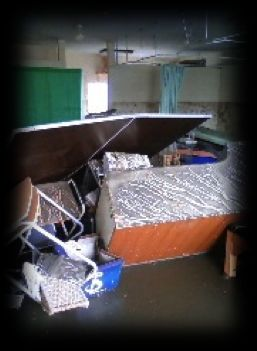

| Bottle care player Bottle care Advance | |
| 相澤真 | |
| UNKNOWN (2019) | |
ボトルケアは、東日本大震災がきっかけ で誕生しました。季節は３月上旬、時折雪 がちらつき夜はマイナスまで下がり、ライフ ラインは完全に麻痺する過酷な環境・・・
震災から数日が経過し徐々に配水も始ま り、プロパンガスの家庭では辛うじてガス
が使用できお湯を沸かすことが可能になり ました。そこでペットボトルにお湯を入れ夜 寝る際に湯タンポとして使用し、時には擦 りながら寒夜を凌ぎました。
この体験からペットボトルを活かして温熱 療法と筋膜リリースが同時にできる『ボト ルケア』の考案に至りました。
・パーソナルジム・ヨガスタジオ・加圧スタジオ
・エステ（フェイシャルケア）・接骨、整骨（運動療法） ・整体院（産後骨盤矯正など）・ワークショップを開きたいetc
空のペットボトルを準 備しお湯を入れます。 ラバー下端部を２０回 程伸縮させ柔らかくし ます。
【足裏】肩甲骨の内側にボトル を置き肩甲骨をひっか けるようにリリース。
【腰】
腰の下（背骨を境に左右）にボトル を置く。両膝をボトルを入れた側に 倒しリリース。
※倒す角度によって感じ方が変わります
。
リース。
ふくらはぎの下にボトルを置く。反 対の膝をたて手を体の後ろにつき、 支点にして身体を前後に動かしリ
お尻のくぼみにボトルを置く。足を軽く首、肩周りの凝り固まって 組み足全体を左右に揺らしリリース。いる場所にボトルを押し当て ※又は仰向けになり同場所にボトル上下にボトルを動かしリリース。 を入れ、同側の膝を立て外側に倒す。